CREATURA Admin
Gerer les cartes, les joueurs et les comptes depuis le tableau de bord d'administration.
Ce guide est reserve aux administrateurs. L'interface d'administration est accessible sur /admin/ et requiert un compte avec le role Administrateur.
L'interface d'administration se trouve a l'adresse /admin/. Entrez votre adresse e-mail et votre mot de passe administrateur.
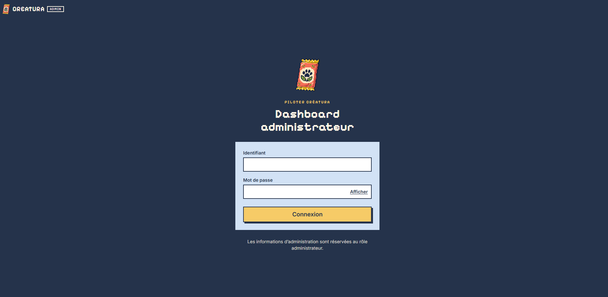
Si vous vous connectez pour la premiere fois avec un mot de passe provisoire, vous serez automatiquement redirige vers la page de changement de mot de passe avant d'acceder au tableau de bord.
Si vous vous connectez avec un compte joueur (sans role Administrateur), la page Acces refuse s'affiche. Contactez un administrateur existant pour faire elever votre compte.
Le tableau de bord () affiche les indicateurs cles de la plateforme sur la periode choisie.
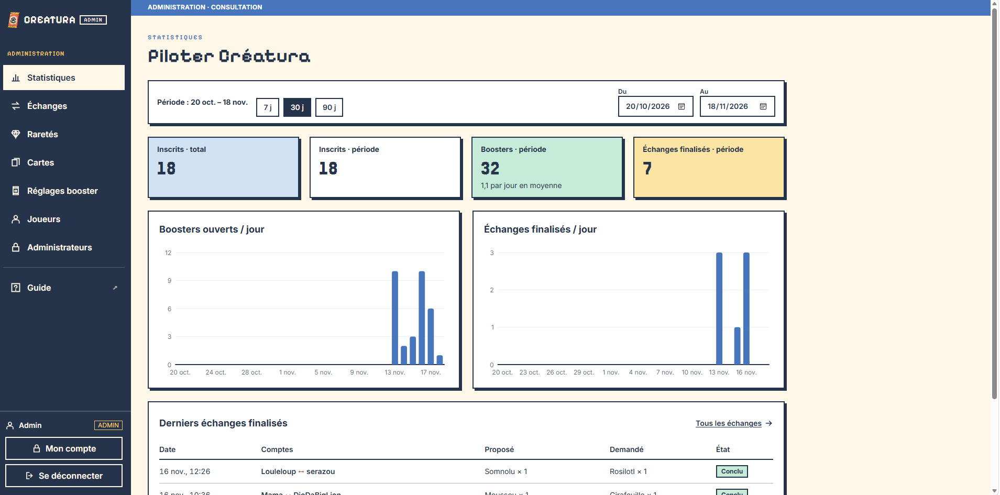
Utilisez le selecteur de periode en haut de page (aujourd'hui, 7 jours, 30 jours, etc.) pour ajuster la fenetre temporelle.
La page liste toutes les creatures disponibles dans le jeu, y compris celles dont la rarete sera modifiee au prochain minuit.
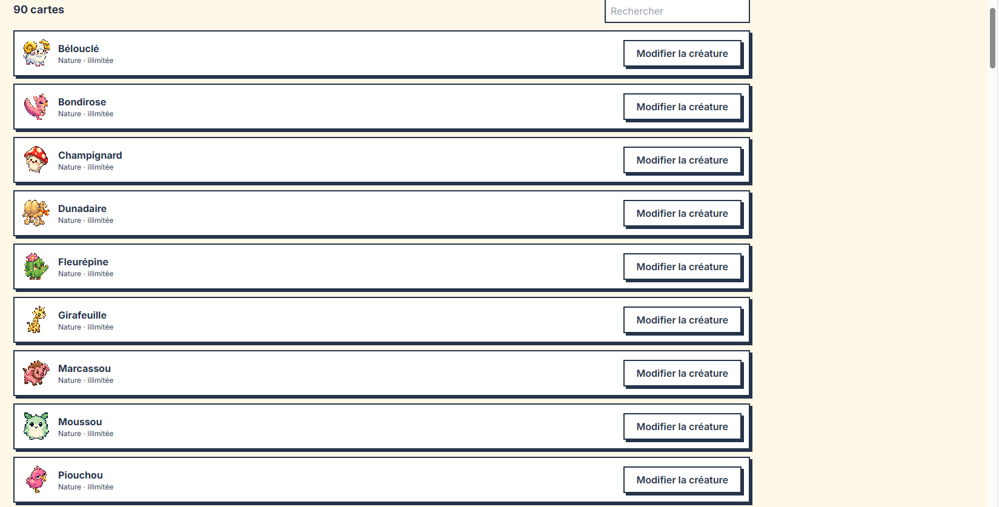
Cliquez sur Nouvelle carte. Un formulaire s'ouvre :
aquila_pyro.png).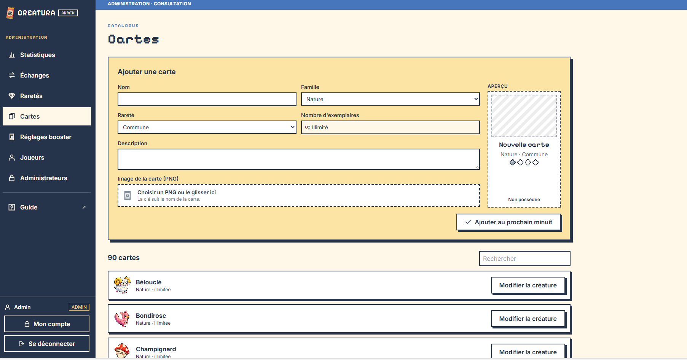
La carte est creee et le sprite est uploade en une seule etape. Si l'upload du sprite echoue, la carte est tout de meme creee et vous pouvez reessayer l'upload via le bouton Modifier le sprite sur la carte.
La nouvelle carte n'apparait dans les boosters et le catalogue joueur qu'a partir du prochain minuit (heure de Paris), apres le recalcul des probabilites.
Le sprite est l'image PNG affichee sur la carte dans le jeu. Il est stocke sur le CDN
sous sprites/<nom>.png.
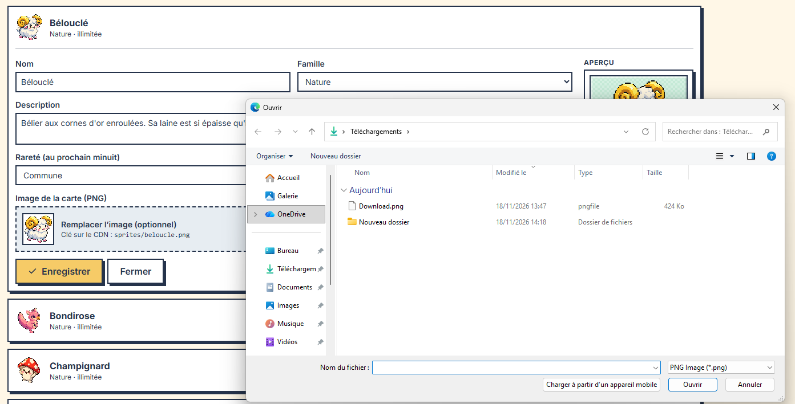
Le fichier doit etre un PNG. La taille recommandee est 128 x 128 pixels
avec fond transparent. Le nom du fichier (sans extension) sera utilise comme cle S3
(sprites/nom_fichier.png) : utilisez des minuscules et des tirets bas uniquement.
Remplacer un sprite existant invalide le cache CDN pour ce fichier. Les joueurs verront le nouveau sprite dans les minutes qui suivent.
Vous pouvez modifier la rarete d'une carte. Le changement prend effet au prochain minuit (heure de Paris) afin de ne pas perturber les boosters deja en cours d'ouverture.
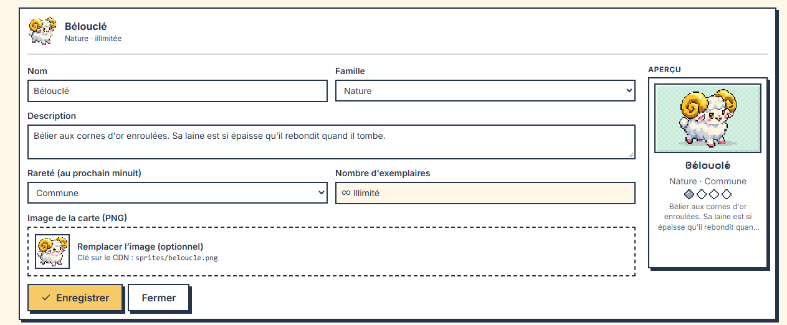
Tant que minuit n'est pas passe, vous pouvez annuler le changement en cliquant sur Annuler le changement de rarete sur la fiche de la carte.
La page liste tous les joueurs inscrits sur la plateforme.
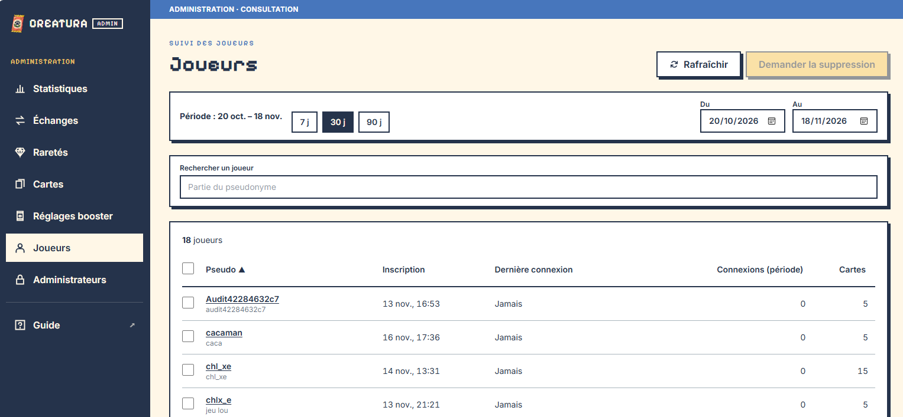
Cliquez sur un joueur pour afficher sa fiche detaillee :
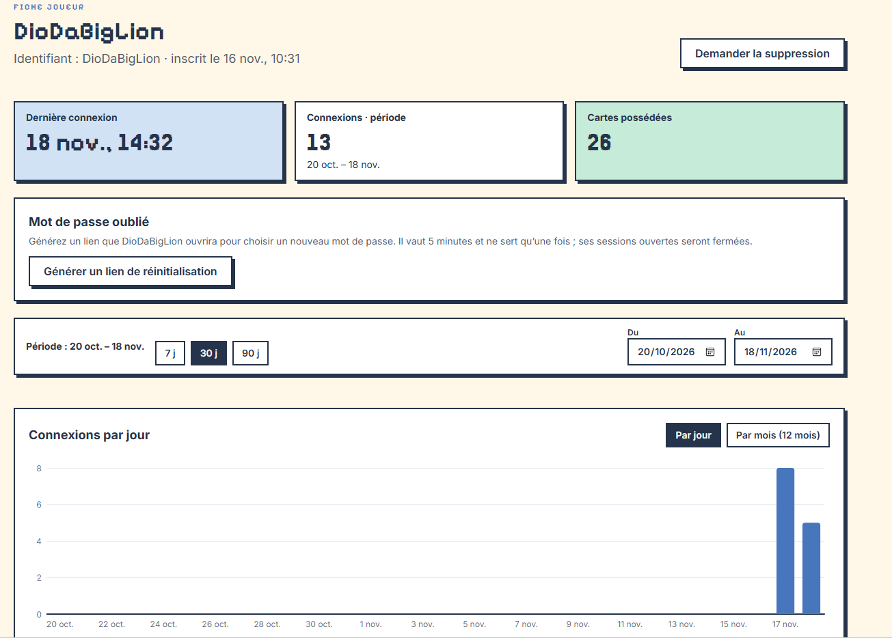
La suppression d'un compte joueur necessite une validation par un second administrateur (pas celui qui fait la demande). Ce mecanisme evite les suppressions accidentelles ou non autorisees.
Si vous etes le validateur designe d'une demande, un badge de notification apparait sur l'onglet .
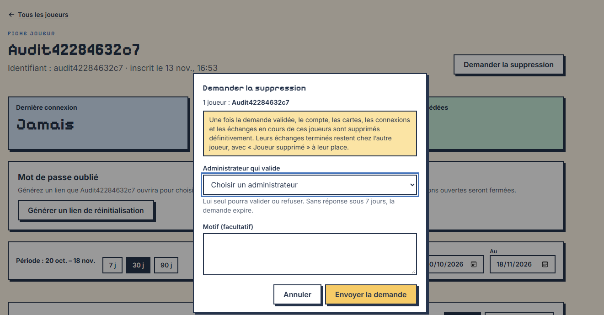
La suppression d'un compte est irreversible. Le joueur apparaitra comme « Joueur supprime » dans l'historique des echanges des autres joueurs.
L'administrateur qui a soumis la demande peut l'annuler tant qu'elle est en statut En attente.
La page liste tous les comptes admin actifs.
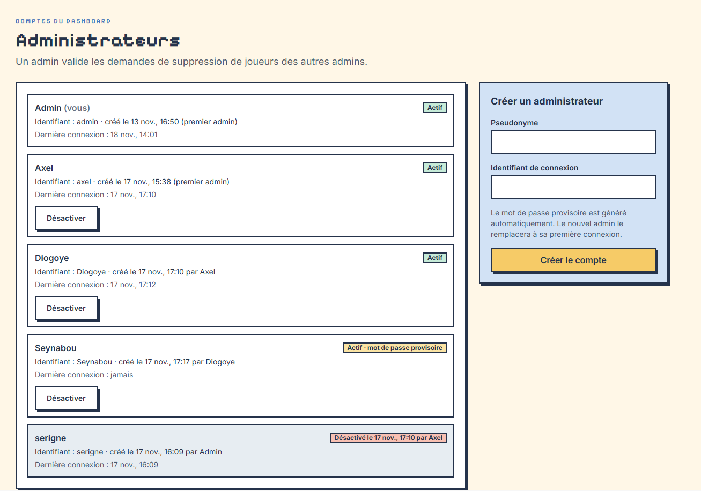
Transmettez le mot de passe provisoire par un canal securise (message chiffre, entretien en face a face). Ne l'envoyez pas par e-mail non chiffre.
Vous ne pouvez pas desactiver votre propre compte. Demandez a un autre administrateur de le faire si necessaire.
La page permet de configurer le nombre de cartes distribues par booster quotidien.
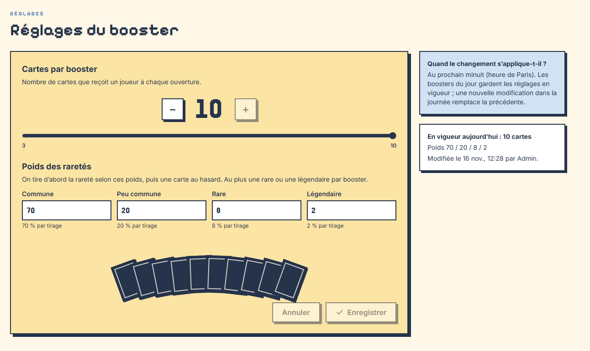
Un booster de 5 cartes est un bon equilibre entre progression rapide et longevite du jeu.
Cliquez sur pour gerer votre propre compte.
Changer le mot de passe deconnecte vos autres sessions actives.
Cliquez sur Se deconnecter depuis la page ou directement depuis la navigation principale.
Deconnectez-vous toujours lorsque vous quittez un poste partage. La session admin est plus sensible qu'une session joueur.